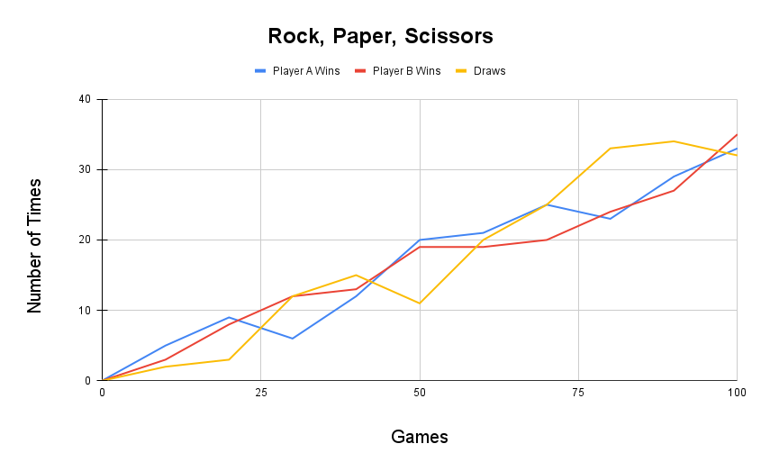
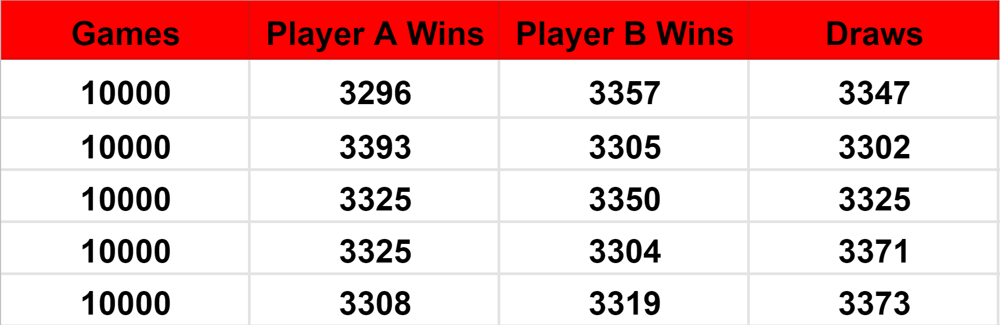

To figure out what the term non-transitive means we can use the idea of the transitive property where if $A=B$ and $B=C$ then $A=C$, see byjus.com. Therefore with this idea we can form a basic understanding of what intransitivity is using the opposite of transitivity so if $A=B$ and $B=C$ then $A$ doesn't neccessarily equal $C$. Then an intransitive preference would be $A$ is preferred over $B$, $B$ is preferred over $C$ and $C$ is preferred over $A$ see Game Theory 101: The Transitivity Axiom. In terms of a game we can think of $A$, $B$ and $C$ as strategies for winning. This would form a loop meaning that there is no best strategy to play and so the game is completely fair no matter who plays. An example of this is the game Rock, Paper, Scissors where the strategies are shown in Figure 1 below.

There are a few more examples of non-transitive games such as:
Though on this page we will just be looking at the game Rock, Paper, Scissors and below is a Python script I made which will run an implementation of this game.
Rock, Paper, Scissors is a two-player game where, after the count of three, they both choose either Rock, Paper or Scissors using their hands to show which they picked as well as communicating through speech. It is a game usually used in helping make decisions between people. The winner of this game is decided by: Rock beats Scissors; Paper beats Rock; Scissors beats Paper (as shown in the Figure 1). Therefore you can see that this game is non-transitive as theres no 'best' option. If they both draw the same item then the game is replayed until there is a winner. This game is either played whoever gets the first point wins, best of three or best of five. There are both upsides and downsides to this game in which the reason being is because its non-transitive such as:
An advantage is that the game is completly fair as theres no specific way to win, it soley depends on what the other player chooses therefore there should be a $\frac{1}{3}$ chance of winning, losing or drawing
However, a disadvantage is if a player cheats by making their decision slighlty later than the other person then they will always be able to win as they can find out what is best to play
In my script I have made my code to run a number of games that the user chooses through an input and records the number of times, either player A or B wins as well as what item they used to win. It also calculates the number of times they draw and then finally works out the win and draw rate for both players, however they should be as close to 33.3% as possible if my code works. This is because that's the probability of winning, losing and drawing. My script then also asks the user if they would like the program to run again allowing them to choose a different number of times the game is played to see how the rate changes.
At the start opf my script on lines 1 and 2 my code imports the random module in Python allowing the program to use randomisation. With 'random.seed()' being code that further randomises whether player A or B play Rock, Paper or Scissors. This allows for a fairer game with no cheating/bias involved.
There are a few ways where I have tried to make my code easier to read and understand. One of these was is on lines 4 - 7 I have defined a horizontal line which seperates my code when it runs. This stops everything being clumped together making it more appealling to read. As I defined it at the start of my script all I had to do in the rest of my code was write, 'HORIZONTAL_LINE()' and a line will be printed where I need it. Another way is that I have used comments with the '#' symbol in my python script. This is ignored by python so I have used it to describe what each section is, allowing the user to understand without even having to know what the code means. I have also added numbered parts to these comments allowing an easier explanation for things that are harder to undertsand with single line comments.
For example in part 4 there are many 'if' statements but there are 3 main ones: if PlayerA == 1:, if PlayerA == 2: and if PlayerA == 3:. This tells python wether player A plays a Rock (1), Paper (2) or Scissors (3). Within these if statements there are smaller ones for player B, saying the same thing, which depending on the outcome, whether it was a win a draw or a loss adds a 1 to the corresponding list created in part 2. These statements will continue to run untill the total number of games chosen by the user in part 1 is reached due to the for loop in part 3 on line 37.
Part 6 adds up each variable together which are for the same player then divides them by the total number of games played which is the variable 'NO_OF_TIMES' then multiplies it by 100 to calculate a percentage. I have used the round function to make the percentages to 1 decimal place.
Part 7 shows the code for Python to re-run the script. Line 92 creates a variable which becomes the users response to the question which only requires one of two answers, yes or no. Lines 93 - 97 then finishes the while command using the users answer. If the answer was yes the program will re-run the script as well as giving a hint to improve the estimate from last time. This is made by the command 'while "yes":' on line 11 which makes the entire code become a while loop. On line 97 a break has been used in order to stop the while loop whether the while condition is true or not and so if no is the users asnwer then the code stops.
Using my script I ran the program 10 times adding on 10 games each time. By ading up the total wins each player got, along with the number of draws, I was able to produce a graph shown in figure 2 below.
From this figure you can see there is an overal trend, which when at 100 games, both players win and draw around 33 games. This is to be expected when a high number of games is payed the win and draw rates tend to 33%. This is to be expected when the game is played fairly. There are a few spikes for example, after 50 games the number of draws drops significantly rather than increase and follow the trend. This is another way you can see that the game implemented by my code on Python is fair. Having no best strategy means that the way that each player wins each time will be random as well, whether it be using Rock, Paper or Scissors. This is shown when my code is run through Python as it produces a table with how many wins each player gets using each item.
However, as my code creates a game completley randomly the data from this graph won't be able to be reproduced although it will be relatively close. For example if the user were to ask for 10000 games to be played then the chances of very similar results is very high.
In figure 3, the table shows that the more games played each time the more similar the results will be, as although 10000 games were played and I ran the program 5 times all the results are different by less than 100. If there was a best strategy the game wouldn't be so fair as well as if one of the players cheated there would be a major difference between the wins and draws. This would mean either player A or B would have predominently more wins resulting in the other player and the number of draws to be less.